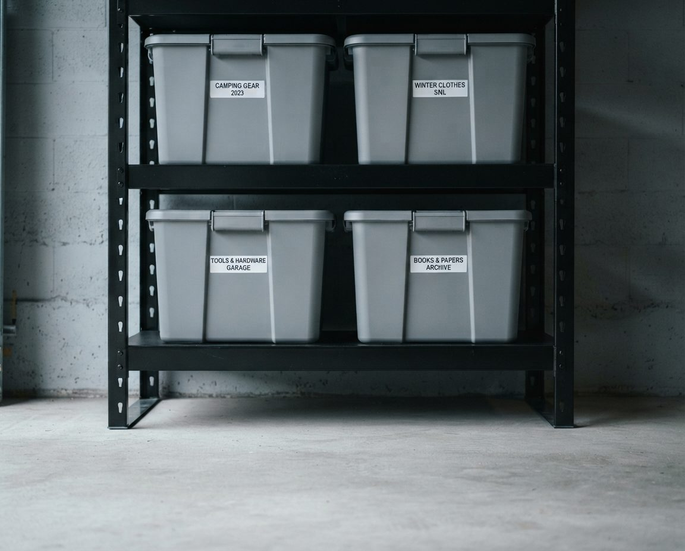
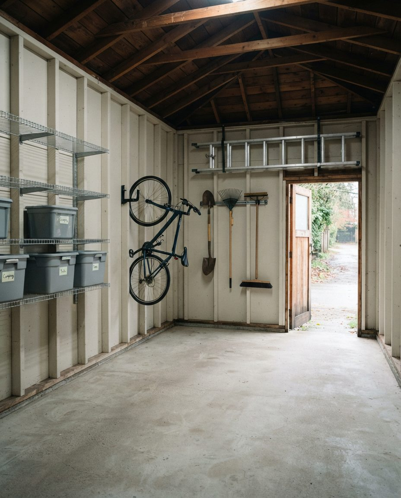

What Vancouver Damp Does to a Garage Cabinet
Vancouver gets roughly 1,200 mm of rain a year across more than 160 wet days. An unheated garage sits close to outdoor humidity all winter, and a car that drives in wet every evening adds more water to the room. The concrete slab stays cold through all of it, so anything porous that touches the floor draws moisture up from below.
Cabinets fail here in three places. The bottom edge goes first: flat-pack boxes made of MDF or particleboard take in water through the cut edges and the screw holes, the core swells, and the doors stop closing square. The back panel goes second. A box pushed tight against a cold outside wall traps still air behind it, and mould grows on the wall and on the back of the cabinet where you cannot see it. The feet go third. Plain steel standing on a damp slab rusts where the paint is thinnest.

The slab does this to particleboard tooAn example garage, not a photo of a Vancouver client's. Cardboard shows the damage in one winter. A flat-pack cabinet standing on the same floor takes about two, and it fails the same way, from the bottom up.
None of this means cabinets are a bad idea in Vancouver. It means the material, the height off the floor and the gap behind the box matter more here than the colour of the doors. If the wall base in your garage is already stained or smells musty, read our page on mould in a Vancouver garage before you cover that wall with anything.
Garage Cabinet Materials Compared
The material matters most on the bottom row and on outside walls. Higher up on an inside wall, in a garage that is heated or shares a wall with the house, you have more choice.
| Material | In a damp, unheated garage | Where we use it |
|---|---|---|
| Powder-coated steel | Does not swell. Wipes clean. A chipped coating will rust, so we touch up chips and keep the box off the slab. | Base cabinets, tall lockers, lane garages, any outside wall |
| Sealed and painted plywood | Stays flat through wet and dry seasons if every face and edge is sealed, including the back. | Odd-sized walls and custom widths in older garages |
| Melamine over particleboard | Fine while it stays dry. Once water reaches a chipped or cut edge the core swells and the hinges pull out. | Upper cabinets on an inside wall of a heated garage, with every edge banded |
| Raw MDF or particleboard | Swells, sags and grows mould on the back panel. Most low-priced flat-pack kits are made of it. | We do not install it in garages |
| Plastic resin | Unaffected by moisture, but the shelves sag under paint cans and tool cases. | Light garden and cleaning supplies |
Hardware counts as much as the box. We use galvanized or stainless fasteners near the overhead door and anywhere wet gear hangs, because plain steel screws rust and stain the wall below them. Our garage storage solutions page compares shelving, wall track and overhead racks the same way.
How We Hang Cabinets in a Vancouver Garage
Four rules cover most installs. The cabinet hangs on a wall rail or stands on adjustable legs, with a clear gap above the slab that a broom and a mop fit under. On an outside wall we leave an air gap behind the box so the wall can dry. Every unit is fastened into studs or, on concrete, with masonry anchors. And we check the wall before we load it.


Fix the wall before you cover itAn example garage, not a photo of a Vancouver client's. A cabinet hides a damp wall base and makes it worse. We clean and dry the wall first, then hang the cabinets above the stain line with air behind them.
Latches and anchors for earthquake country
PreparedBC, the provincial preparedness program, asks households to anchor cabinets and shelving to wall studs and to fit latches on cabinet doors so they cannot swing open in shaking. We fasten every cabinet to framing, tie tall units to each other and fit latches on the doors that hold paint, solvents and glass. Heavy items go in the base cabinets. Our earthquake-ready garage page covers the rest of the garage, including the hot water tank and the two-week kit.
What Belongs Behind Doors, and What Should Stay in the Open
A closed cabinet costs more per shelf than open steel shelving, and in a damp garage a door also stops air moving. So we put doors where they do a job: keeping children and pets away from chemicals, keeping dust off tools, locking up things worth stealing. Wet gear and everyday bins stay in the open.
| What you are storing | Best home | Why |
|---|---|---|
| Paint, solvents, pesticides, pool and moss treatments | Latched steel cabinet, low on the wall | Out of reach of children, shut in a shake, and all in one place when it is time for a depot run |
| Power tools, batteries and chargers | Base cabinet with drawers under the bench | Dust and damp stay off, and the tools sit where they get used |
| Bikes, e-bikes, expensive tools in a lane garage | Lockable tall locker or a wall anchor | A lane door is easy to reach from the alley, so a second lock inside is worth having |
| Rain shells, ski boots, wetsuits, bike helmets | Open hooks and a boot tray | They come home wet. Behind a door they stay wet and start to smell. |
| Camping gear, holiday boxes, keepsakes | Gasketed bins on open steel shelving or an overhead rack | The bin keeps the damp out, and a label on the front beats a door for finding things |
| Emergency water and food | The lowest level of an anchored unit near the exit | Twenty-litre containers do not belong on a high shelf |
| Gasoline and propane | Approved containers, away from the furnace and hot water tank | Not in the closed chemical cabinet. See the fuel note below. |

Most of a garage does not need doorsAn example garage, not a photo of a Vancouver client's. Sealed bins on open shelving hold the bulk of what a household stores. Cabinets take the chemicals, the tools and the things you want locked.
Old paint and fuel
Clearing a wall for cabinets usually turns up a dozen old paint cans. In B.C. you can drop leftover paint at a Product Care Recycling depot at no charge, and the larger depots also accept pesticides, flammable liquids and gasoline. Use the depot finder at productcare.org to see what each location takes. The BC Fire Code also limits how much flammable liquid can be kept in a garage attached to a home, so ask your fire department for the current figure before you store spare fuel.
Layouts for Vancouver's Common Garages
The detached garage on the lane
Much of Vancouver is laid out in 33-foot lots with a lane behind, and the garage sits at the back of the yard with its door on the lane. Older ones are single or narrow doubles, unheated, with bare stud walls and an open rafter roof. Bare studs suit cabinets well: we can see the framing and fasten a rail straight into it. Because the building is uninsulated, we use steel here, keep it to the side and back walls, and leave the rafters for long, light things like ladders and lumber.

Bare studs take a cabinet rail wellAn example garage, not a photo of a Vancouver client's. This one uses open shelving and hooks. A locker for tools or a latched chemical cabinet would hang on the same studs, clear of the floor.
If the lane garage is still full, start with laneway garage clearing. In older west-side neighbourhoods the garages are often original to the house, and our pages on Shaughnessy and Point Grey cover what we find there.
The Vancouver Special
The Vancouver Heritage Foundation dates the Vancouver Special to roughly 1965 through 1985 and notes that it was designed to fit the 33-foot city lot. Many park under a carport off the lane, and others have a single garage. A carport is open to the weather and to the alley, so storage there has to be closed, lockable and made of steel. We fit one or two tall lockers against the house wall, raise them off the slab and keep the parking space clear.
The tandem townhouse garage
Tandem garages in Burnaby, Coquitlam and Langley townhouses are long and narrow, with the furnace and hot water tank at one end. Only one wall can carry storage, because the other side has to stay clear for the car door. Shallow upper cabinets work here, hung high enough to walk under, with clearances kept around the furnace and the tank. Our Burnaby storage page goes through tandem layouts in detail, and the Langley page covers the newer townhouse garages south of the Fraser.
Strata garages: send the bylaws first
Many strata corporations want approval before an owner fastens anything to a garage wall, and some bylaws limit what can be stored in a garage or a parking stall. We read the bylaws before we design. Where drilling is restricted we use freestanding steel cabinets on levelling feet, braced so they cannot tip.
The attached double
In newer houses across Surrey, Richmond and the North Shore, the attached double has a step and a door into the house in one corner and the cleanest run of wall straight ahead of the bumper. Upper cabinets go on that front wall, high enough for the hood and an open tailgate to clear. The side walls stay shallow so both car doors open fully.
Base Cabinets and the Workbench
If you tune bikes, wax skis or keep a house running with your own tools, the base cabinets become the workbench. A run of steel base cabinets with a solid wood top gives you drawers for the small parts and a surface that takes a vise. Pegboard or wall track above holds the tools you reach for every week, where you can see what is missing.


Tools you use weekly stay visibleAn example garage, not a photo of a Vancouver client's. This bench has open legs. Steel base cabinets under the same top would add drawers for power tools and chargers and keep the dust off them.
A wall of cabinets makes a garage darker, so we check the lighting before the cabinets go up. One bulb in the middle of the ceiling leaves a bench in shadow, and a light strip under the upper cabinets fixes that. If bikes are most of what the bench is for, our page on garage bike storage covers racks, lifts and e-bike charging.
What Garage Cabinets Cost in Vancouver
Search for garage cabinets in Vancouver and most of what you find is cabinet manufacturers and big-box kits. A matched, made-to-measure fit-out from a manufacturer commonly runs $4,000 to $15,000 or more for a double garage. A flat-pack kit costs far less and is usually MDF.
We work differently. You pay us for the measuring, the layout and the installation, from $649 for a single garage. The cabinets go on a hardware list at cost, chosen from more than one supplier, to a budget you set. A full system for a double garage, cabinets included, typically runs $600 to $2,500 in materials. The price moves on four things:
- Length of wall. One back wall costs far less than an L around a double garage.
- Drawers and tall units. Drawer cabinets and full-height lockers cost more than plain door cabinets.
- The wall itself. Out-of-square lane garages and concrete walls take longer to fit than new drywall over studs.
- What comes first. Clearing the garage and drying a damp wall are separate line items, and both should happen before the cabinets go up.
Sometimes the right number of cabinets is one. A single latched chemical cabinet, a wall of steel shelving and sealed bins will hold what most households own, and our garage organization in Vancouver page explains that approach. If you want a showroom garage with matched doors on every wall, a cabinet manufacturer does that better than we do, and we will tell you so.